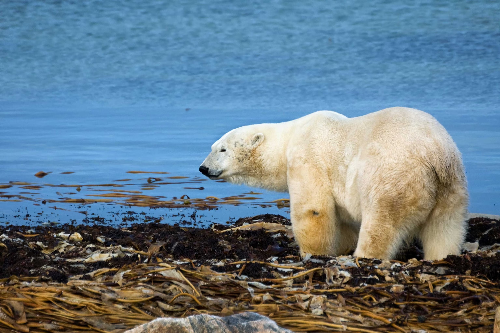
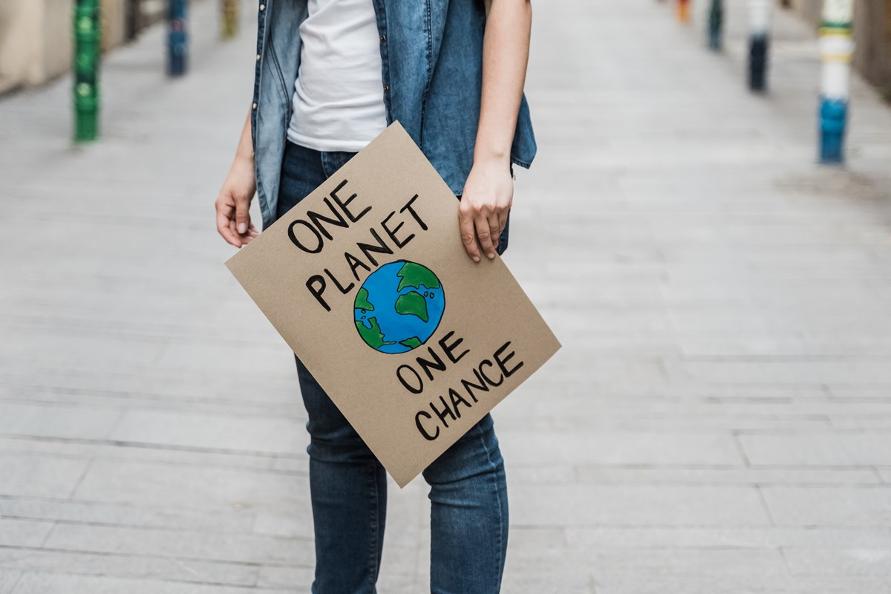

Current State of Our Planet
"Climate Change is the defining issue of our time and we are at a defining moment. From shifting weather patterns that threaten food production, to rising sea levels that increase the risk of catastrophic flooding, the impacts of climate change are global in scope and unprecedented in scale. Without drastic action today, adapting to these impacts in the future will be more difficult and costly." - United Nations
"It is unequivocal that human influence has warmed the atmosphere, ocean and land. Widespread and rapid changes in the atmosphere, ocean, cryosphere and biosphere have occurred. The scale of recent changes across the climate system as a whole – and the present state of many aspects of the climate system – are unprecedented over many centuries to many thousands of years." - United Nations
Proposed Methods
Numerous agreements have taken place on the international stage,  but they have failed in reversing global warming. One example is the Paris Agreement which is signed by nearly all countries but lacks teeth in the enforcement mechanisms. Another example is the Kyoto Protocol which targeted control of greenhouse gas emissions. The agreement has been a source of international tension between countries since just after its signing in 1992.
Current Initiatives are employed by governments to spur R&D investments and expansion in green technology. A few examples of them are shared by the White House Climate Task Force who highlighted increased clean energy deployment and the expansion of the electric vehicles
Facts
According to the NASA website, "ice cores drawn from Greenland, Antarctica, and tropical mountain glaciers show that Earth’s climate responds to changes in greenhouse gas levels. Ancient evidence can also be found in tree rings, ocean sediments, coral reefs, and layers of sedimentary rocks. This ancient, or paleoclimate, evidence reveals that current warming is occurring roughly 10 times faster than the average rate of warming after an ice age. Carbon dioxide from human activities is increasing about 250 times faster than it did from natural sources after the last Ice Age." - NASA
" It is undeniable that human activities have produced the atmospheric gases that have trapped more of the Sun’s energy in the Earth system. This extra energy has warmed the atmosphere, ocean, and land, and widespread and rapid changes in the atmosphere, ocean, cryosphere, and biosphere have occurred." - NASA